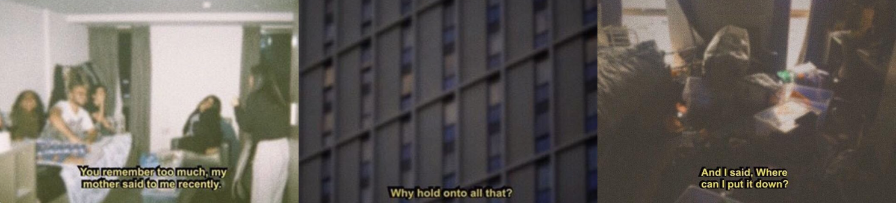

The beginning of this talk is about Link Dump, which is an ephemeral link canvas I made where the links are designed to eventually disappear and remain only as an exportable csv.
While I was creating this project I went against the normal design process that I follow during my day job as a product designer. I ended up ultimately designing for myself. More specifically, I designed for the values I believe in. The first being the urgency to finish creative work and the second as a manifestation of feelings I had about data on the internet.
The urgency was because I would take notoriously long to finish creative projects. As a serial digital hoarder writer, I used to save so much. I would take screenshots, notes, photos and links; I would save so much with the intent of saving and synthesizing and creating but it would remain an ever running to-do list. At the same time I had read the creative act, where Rick Rubin quotes creativity as a universal force where if you don't act upon it, it would eventually disappear. In essence, that sparked the first iterations up in which I would have an are.na board that you could import and cardsort them. The cards would age with time and when it finished it would disappear and delete themselves. The passage of time also manifested as a screensaver that would appear if you left your tab idle for too long.
The second part was I wanted to create lighter software. The temporal aspect was really important because I had a personal belief that the internet remembered too much. When we think of storage we think of the cloud, as this weightless entity. However, the internet has an immense physicality to it - as data centers in the midwest and huge undersea cables. Furthermore, data is actually a huge monetization lever, and companies don't have an incentive to make it easy to mass delete items. The easier solution is just to subscribe and upgrade to unlimited cloud storage and continue to accumulate. In my first iteration of this, and one of the modes you can choose, you can do everything locally. Data would be locally stored in the browser and you could eventually export it to your own hard drive.
Allowing the user to own their data was important to me because we don't realize that our data is owned by large corporations that can disappear at any second. Earlier in 2025, Tiktok was accidentally banned and they let you export your data as a huge CSV, but you couldn't actually save your Tiktoks because the CSV linked out to tiktoks as well.
But beyond the technicalities of it all, as a whole my motivations can be summarized from this one picture I saw on tumblr when I was 16.
I think we hold on and notice and collect, but we never really put it down. Putting it down is really important because it's how you process and create and engage with the world around you and ultimately remember.
However, I would say another important facet of this project was the process itself. I created the bulk of this project between the months of March to May. A little about me is I'm a designer who before this, only knew HTML, CSS and Javascript. I knew how components worked in react but I never did state management before or connected to a database.
As I've mentioned before the typical design process success would be I'd explore a prototype and test on Figma and build in increments. But what I actually did was a linear process where I built out what I thought was the MVP and then kept on redoing it. The first version was just a draggable card canvas with a timer.
After that I wanted to demo it at an art event and have a participatory aspect where people contribute their links onto a group collaborative board. I then introduced a board that anyone could access via a link and had cross-device syncing and collaboration. People could upload an image from their phone and it would show up in the browser window.
Then I decided it would be a good idea to show my app to some people and ask them if they would use it. At this point, a particular feature I had been proud of was this glossy modal I created that smoothly transitioned from the onboarding screen to the board creation screen. When I tested it some friends told me that there were a lot of inputs in the board creation modal and they weren't really sure if they wanted to go through all that effort to figure out how the link canvas worked. That was when I realized I needed a new onboarding mode.
I recoded it again and now on your first time viewing Link Dump, it immediately opens to a canvas that has some cards explaining what's going on. I also simplified the board creation modal to have more defaults so you don't really have to fill out much to get started and it begins.
After showing it to some people, I decided it was time to use it myself to write an essay. I had been writing an essay about the underpinnings of this project, which I called the "Organic web". I had all these links I was organizing when I realized that I had put them into groups. Unfortunately the CSV export did not remember these groups I had created and I couldn't label them. At this point I thought if I could just build out this one last feature I could be done with this project.
It was also around this point I did not understand some parts of my code base anymore. Because I was using AI to assist some of the more fullstack programming, you can see I started to break my code a lot with the further changes I made. At this point I started to feel really frustrated, I had spent hundreds of hours creating software that is still buggy and I can't figure out how to add baseline features for myself to even use it.
So what was the reason to keep on doing this? I'm a product designer and after a certain point you start to realize that essentially you will always be designing for a business, and a business it has to make money. A lot of things you design end up as monetization levers. It's a trend that has become really common, enshittification is a term that describes how companies first offer high quality services but then because they are backed by venture capital, they have to implement some decisions at cost for the user to maximize profits.
I started to wonder, is there even a way to make software that is "good"? What is good anyways? If you go to silicon valley, the good would be "what is a niche market where I can follow basic design principles to make it easy do the main task and also use AI".
However I would disagree and I think of software as a vector reimagining. I recently, read this article in which two authors are discussing the state of the world, and this one guy James wrote this book in which he writes about all the data surveillance and bad things tech is doing. He comes to this conclusion that we are screwed because the current system we live in keeps the existing power dynamics and there's no interest in educating on how it works. After he writes the first book, he becomes quite depressed and the only way out of it is by making things (he makes several solar powered objects in the article). The conclusion he comes to is that when you make your own technology, you can make something different and upset the existing power balance. Making is something that people are doing all the time and that you can do yourself. That leads me to my answer which is values based software.
I'll explain this concept through an anecdote. There are so many websites where you save and categorize. There is Pinterest, and Cosmos, and Silk and River and if you're listening to this talk you are probably well aware of Are.na. So people, people create the same app, but each is slightly different.
I want to highlight Are.na in particular because it was made 14 years ago, around the same time Instagram was made. What really set it apart was its revenue model, in which it doesn't have ads or collect user data as a way of monetization or any sort of algorithm. It makes money through subscriptions that people who use the app pay. People often say Are.na is "hipster pinterest" but more accurately it is a platform in which you can participate in to resist the enshittification of technology.
I believe that technology becomes a choice because we all these different options to choose from and we can choose the one that stands with our values and how we view the world. I think technological disruption is more about seeing what you want to see in the world. One of the positive sides to vibe coding or AI assisted coding tools is you're bring in a new sense of accessibility in which people who were previously scared or didn't think they were smart enough to make software can now make it themselves and put into the world what they want to see.
Building becomes a new kind of freedom. A freedom to reimagine the world and what we want to see it become.
This is a transcript of my Chinatown.js talk. You can look through the slides here or the YouTube link below (warning: the microphone rings).